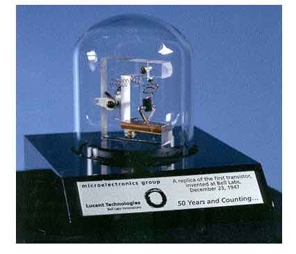
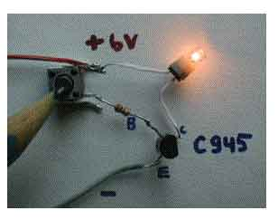
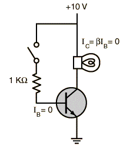
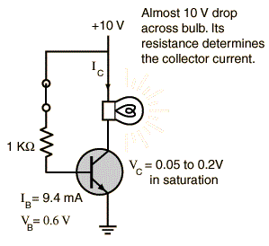
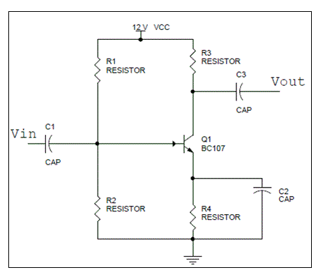
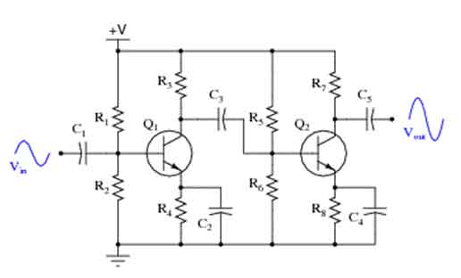

• Applications
Transistor as a Switch
BJT as Amplifier
Single Stage RC Coupled CE Amplifier
History of Bipolar Junction Transistors
The transistor (BJT) was not the first three terminal devices. Before transistors came into existence vacuum tubes were used. In electronics, vacuum tube triodes were used almost for half a century before the BJT’s. The light bulb invented by Thomas Edison in the early 1880’s was one of the first uses of vacuum tubes for any electrical applications. The vacuum tube triodes were used in various computer designs till early 1950’s. But the major problem was, as the complication of the circuits increased more and more triodes were required to be integrated. In those days a large computer would have many racks filled with tubes which almost occupied a large room. Size was not the only problem, the tubes consumed large power and sometimes would leak hence were less reliable.

Hence, scientists and engineers started thinking of ways to make some other kind of three terminal devices. So instead of controlling an electron in vacuum they begin to think of ways to control it in solid materials. In 1947, two physicists John Bardeen and Walter Brattain working at the Bell laboratories found that by making two point contacts very close to one another, they could actually make a three terminal device. Thus the first point contact transistor was made by using germanium, paper clip and razor blades. Figure below shows a replica of the same. Than Shockley developed the junction transistor (BJT) by pressing together thin slices of different semiconductor materials. The transistors replaced the vacuum tubes and made a dramatic change in the world of electronics. Bardeen and Brattain together with William Shockley were horned by the Nobel Prize in Physics in 1956 for the invention of the transistor effect. For many years transistors were manufactured as individual components until late 1950’s, after which integrated circuits (IC’s) came into existence which placed all components on one single chip. This is just one portion of an endless history of BJT.
Applications of Bipolar Junction Transistor
There are two types of applications of bipolar junction transistor, switching and amplification.
Transistor as a Switch
For switching applications transistor is biased to operate in the saturation or cutoff region. Transistor in cutoff region will act as an open switching whereas in saturation will act as a closed switch.

Open Switch

In the cutoff region (both junctions are reversed biased) the voltage across the CE junction is very high. The input voltage is zero so both base and collector currents are zero, hence the resistance offered by the BJT us very high (ideally infinite).
Closed Switch

In saturation (both junctions are forward biased) a high input voltage is applied to the base. The value of base resistance is adjusted such that a large base electric current flows. There is a small voltage drop across the collector emitter junction of the order of 0.05 to 0.2V and collector electric current is very large. A very small voltage drop takes place across the BJT and it can be said to be equivalent to a closed switch.
BJT as Amplifier
Single Stage RC Coupled CE Amplifier
The figure shows a single stage CE amplifier. C1 and C3 are coupling capacitors, they are used for blocking the dc component and passing only ac part they also ensure that the dc basing conditions of the BJT remains unchanged even after input is applied. C2 is the bypass capacitor which increases the voltage gain and bypasses the R4 resistor for ac signals.

The BJT is biased in the active region using the necessary biasing components. The Q point is made stable in the active region of the transistor. When input is applied as shown below the base electric current starts to vary up and down, hence collector electric current also varies as IC = β × IB. Therefore voltage across R3 varies as the collector electric current is passing through it. Voltage across R3 is the amplified one and is 180° apart from the input signal. Thus voltage across R3 is coupled to the load and amplification has taken place. If the Q point is maintained to be at the centre of the load very less or no waveform distortion will take place. The voltage as well as electric current gain of the CE amplifier is high (gain is the factor by which the voltage of electric current increases from input to output). It is commonly used in radios and as low frequency voltage amplifier.

To further increase the gain multistage amplifiers are used. They are connected via capacitor, electrical transformer, R-L or directly coupled depending on the application. The overall gain is the product of gains of individual stages. Figure below shows a two stage CE amplifier.
 by
by